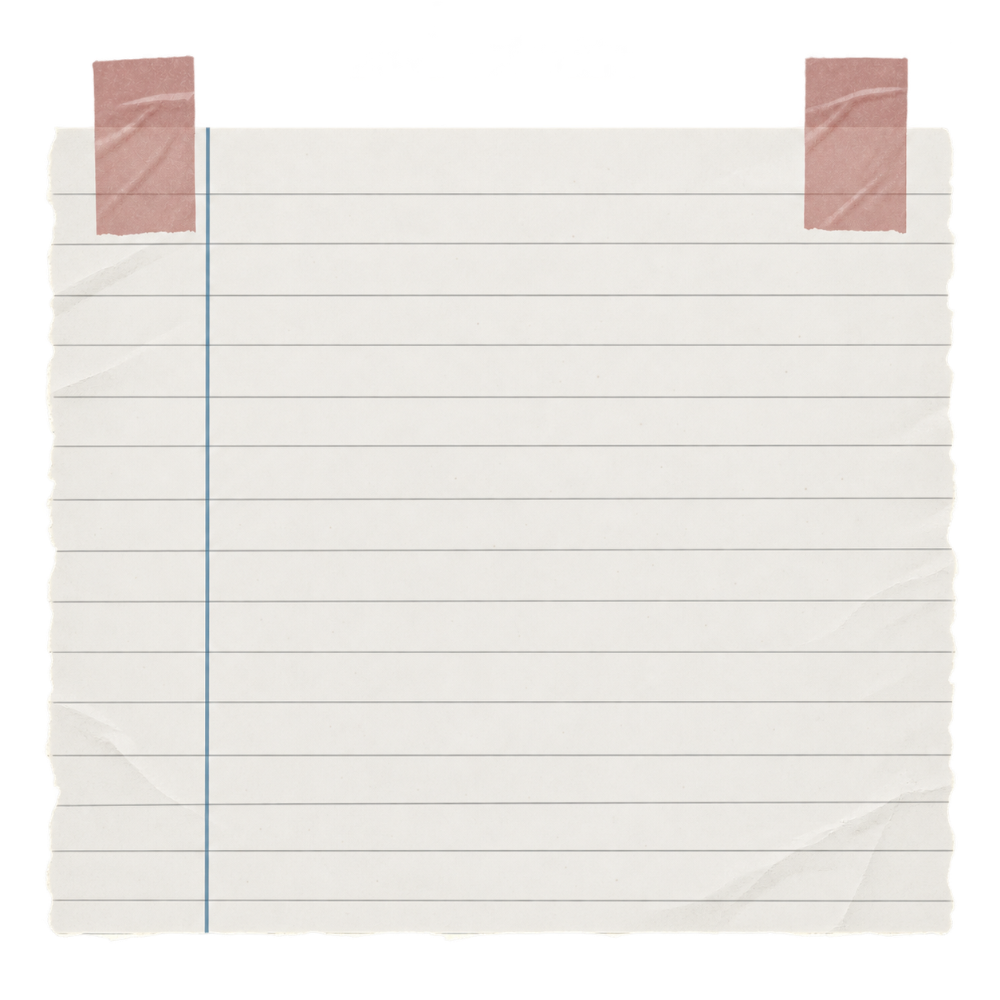
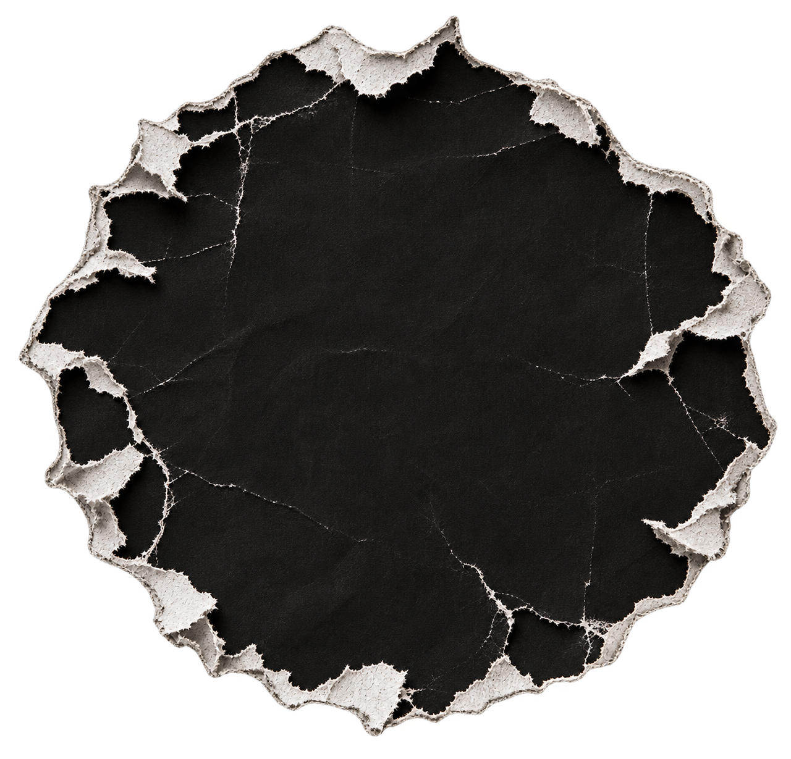
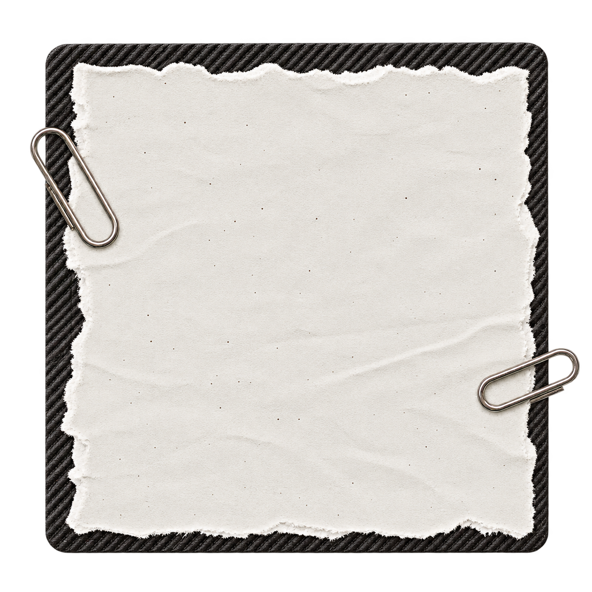
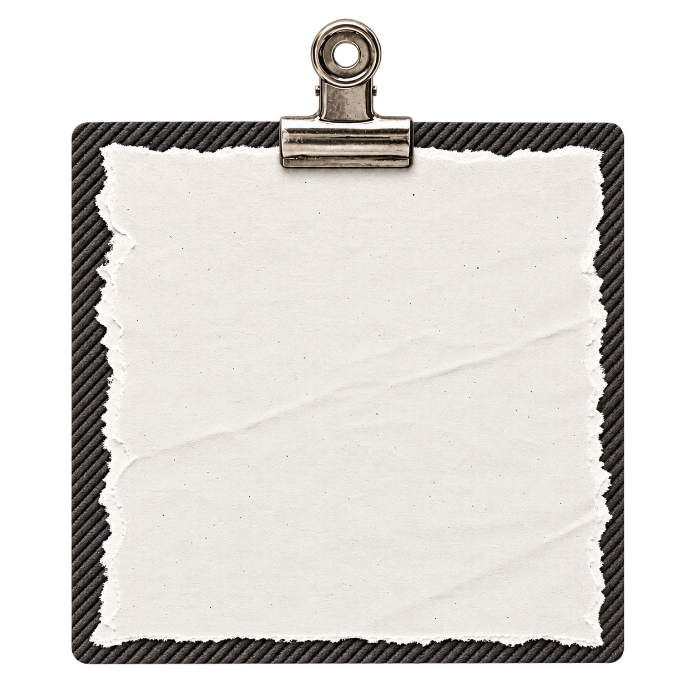
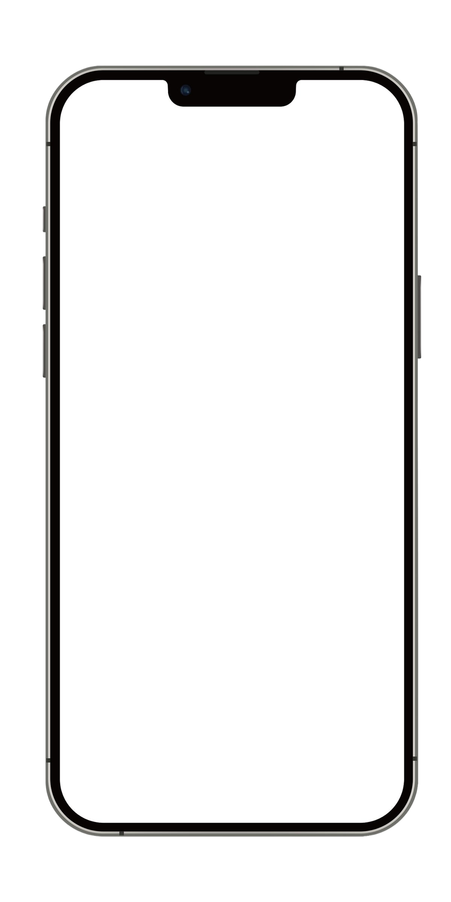
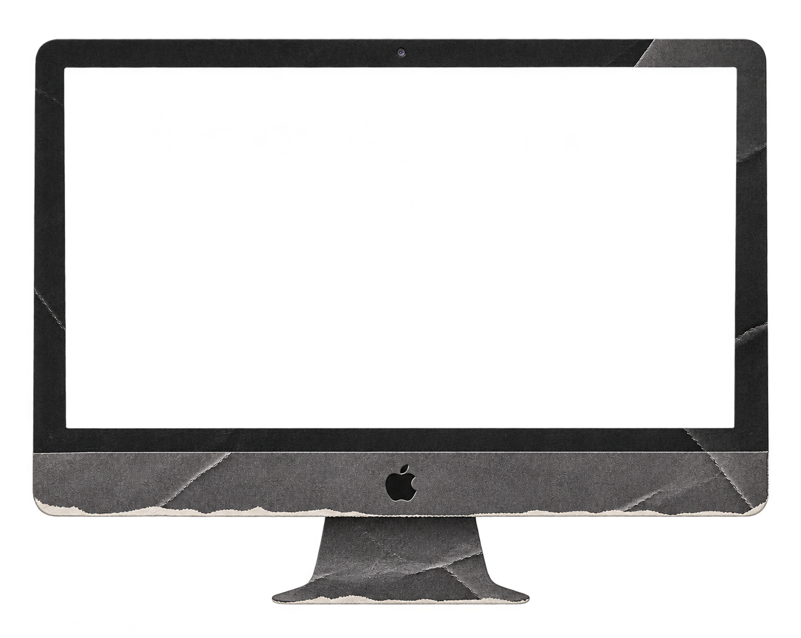

UI/UX 디자이너 최동민 소개
- 이름
- 최 동 민 / CHOI DONGMIN
- 지원 직무
- UI/UX 디자이너 · 웹 디자이너 · 웹 퍼블리셔
- 포부
- 사용자와 상호작용하며, 편리함을 제공하는 디자이너가 되고 싶습니다.
THE APP FOR HOME SERVICES
The all-in-one app that runs your home-service business . Noback-and-forth. No quote delays. Just more jobs booked whileyou focus on the work.


게임 QA에서 기른 분석력으로 사용자의 행동과 흐름을 예측하고, 작은 불편함도 놓치지 않으며, 직관적인 UI와 섬세한 인터랙션으로 완성도 높은 웹 경험을 설계합니다.




WORK
TEAM
PROJECT
[from September 1 to 30]
[scroll]This wayTo see the things we made.
현대 모터스튜디오는 전시, 시승, 프로그램 등 다양한 모빌리티 경험을 제공하고 있습니다. 분산된 콘텐츠와 복잡한 예약 흐름을 하나로 연결해 탐색부터 예약까지 쉽고 직관적으로 이어지는 UI/UX를 설계했습니다.


[Main Page Mockup]
현대 모터스튜디오는 전시, 시승, 프로그램 등 다양한 모빌리티 경험을 제공하고 있습니다. 분산된 콘텐츠와 복잡한 예약 흐름을 하나로 연결해 탐색부터 예약까지 쉽고 직관적으로 이어지는 UI/UX를 설계했습니다.
[Sub Page Mockup]
차량 탐색부터 전시와 시승, 예약까지 분리되어 있던 정보를 하나의 모빌리티 경험으로 연결했습니다.
차량별 특징과 실제 체험 요소, 주행 코스를 단계적으로 구성해 사용자가 경험을 이해하고 자연스럽게 예약하도록 설계했습니다.
We bring every mobility
대형 이미지와 간결한 문장을 조합해 공간과 콘텐츠의 분위기를 강조했습니다.
서로 다른 콘텐츠가 하나의 브랜드 이야기로 이어지게 했습니다.
정보를 읽는 화면을 넘어 현대 모빌리티를 미리 경험하는 탐색 환경을 설계했습니다.

From Discovery to Experience
흩어진 정보를 하나의 여정으로 연결했습니다.
사용자는 관심 있는 경험을 발견하고 필요한 내용을 빠르게 이해할 수 있습니다.
온라인 탐색이 일정 확인과 예약, 실제 공간 방문까지 자연스럽게 이어집니다.

A rhythm that leads to effects
대담한 영문 타이포그래피로 현대 모빌리티의 역동성을 표현했습니다.
명확한 한글 위계와 여백을 활용해 복잡한 정보의 가독성을 높였습니다.
스크롤 인터랙션을 더해 콘텐츠를 따라 이동하는 듯한 리듬을 완성했습니다.

Turn exploration into action with a
분산되어 있던 지점과 콘텐츠, 예약 정보를 목적에 따라 다시 구성했습니다.
차량과 전시, 프로그램의 차이를 한눈에 비교할 수 있도록 정리했습니다.
반복되던 이동을 줄이고 상세 정보에서 예약까지 연결되는 흐름을 만들었습니다.
Market Research
시장 조사, 경쟁사 조사, STEEP, 3C 분석을 통해 사용자 요구와 시장 기회를 발견하고 브랜드의 차별화 방향과 웹사이트 개선 가설을 도출했습니다.
[ DEFINE_02 ]
Problem Definition
시장 조사와 사용자 관찰에서 반복적으로 나타난 행동과 불편을 분류했습니다. 해결이 필요한 핵심 문제와 우선순위를 정리해 팀이 같은 목표를 바라보도록 했습니다.
[ PLAN_03 ]
Information Architecture
회의 결과와 사용자 흐름을 바탕으로 메뉴트리, 플로우차트, 화면별 요구사항을 구체화했습니다. 설계 기준을 통일하고 원하는 정보까지 자연스럽게 도달하는 구조를 만들었습니다.
[ DESIGN_04 ]
Design System
핵심 사용자 흐름을 와이어프레임으로 검토한 뒤 타이포그래피, 색상, 그리드와 컴포넌트 규칙을 정의했습니다. 다양한 화면에서도 일관된 경험을 유지하도록 설계했습니다.
[ VERIFY_05 ]
Usability Test
주요 과업을 기준으로 프로토타입을 검증하고 사용자가 멈추거나 망설인 지점을 기록했습니다. 발견된 문제를 우선순위에 따라 개선하고 다음 설계에 반영할 기준을 남겼습니다.
시장과 브랜드 환경을 다각도로 파악하기 위해 시장 조사, 경쟁사 조사, STEEP, 3C 분석을 진행했습니다.
분석 결과를 바탕으로 사용자 요구와 시장 기회를 발견하고, 브랜드의 차별화 방향과 웹사이트 개선 가설을 도출했습니다.
사용자의 실제 경험과 요구사항을 파악하기 위해 설문조사와
사용자 분석을 진행했습니다.
수집된 응답을 바탕으로 웹사이트 이용 과정에서 나타나는 불편함과 주요 니즈를 파악하고, 사용자 관점에서 개선이 필요한 요소와 UX 디자인 방향을 도출했습니다.
사용자의 특성과 행동 패턴을 구체적으로 이해하기 위해 조사 결과를 바탕으로 퍼소나를 설정했습니다.
저니맵과 린 캔버스를 통해 사용자의 주요 불편 요소와 핵심 문제를 정의하고, 이를 해결하기 위한 UX 전략과 개선 방향을 구체화했습니다.
팀 회의와 사용자 흐름 분석을 바탕으로 메뉴트리, 사용자 플로우, 화면별 요구사항을 구체화했습니다.
회의 및 역할 분담을 통해 작업의 기준을 통일화하고 사용자가 원하는 정보에 자연스럽게 도달하는 서비스 구조를 완성했습니다.
현대모터스튜디오의 브랜드 정체성과 사용자 요구를 시각적으로 표현하기 위해 무드보드와 디자인 마인드맵을 제작했습니다.
이를 바탕으로 디자인 콘셉트와 핵심 키워드를 도출하고, 일관된 브랜드 경험을 전달하기 위한 시각적 방향을 설정했습니다.
앞서 도출한 UX 전략을 실제 화면에 반영하기 위해 와이어프레임과 디자인 시스템, 공통 컴포넌트를 설계했습니다.
정보의 우선순위와 시각적 일관성을 고려하여 화면을 구체화하고, 사용자가 쉽고 자연스럽게 탐색할 수 있는 UI 디자인으로 발전시켰습니다.
WORK
PERSONAL
PROJECT
[2]
[from September 1 to 30]
[scroll]This wayTo see the things we made.
Project
[Team Overview]
현대 모터스튜디오는 전시, 시승, 프로그램 등 다양한 모빌리티 경험을 제공하고 있습니다. 분산된 콘텐츠와 복잡한 예약 흐름을 하나로 연결해 탐색부터 예약까지 쉽고 직관적으로 이어지는 UI/UX를 설계했습니다.

이케아의 브랜드 가치를 전달하고,
공간별 특징과 매력을 소개하며,
인테리어를 통한 영감을 제공합니다.
코닥의 감성과 정체성을 전달하고,
다양한 스타일과 컬렉션을 소개하며,
트렌디한 브랜드 경험을 제공합니다.
INTERATION INTERATION
INTERATIONINTERATION
INTERATIONINTERATION
WOrk
SHORT-FORM
CONTENt
[3]
[from September 1 to 30]
[scroll]This wayTo see the things we made.
contents
[Team Overview]
현대 모터스튜디오는 전시, 시승, 프로그램 등 다양한 모빌리티 경험을 제공하고 있습니다. 분산된 콘텐츠와 복잡한 예약 흐름을 하나로 연결해 탐색부터 예약까지 쉽고 직관적으로 이어지는 UI/UX를 설계했습니다.
One step toward the result
DESIGN: Figma
If you have any questions for me, look here.
웹 사이트 이용 할 때, 단순히 정보를 확인하는 것이 아닌, 사용자가 직접 탐색하고 반응하는 화면을 만들고 싶어 UI/UX 디자인과 웹 구현을 배우기 시작했습니다.
웹 사이트의 구현에서 의도한 대로 동작하는지, 유저 입장에서 불편한 점은 없는지 검토하고 자가 테스트를 하여 오류를 바로잡고 탐색하는 과정에서의 불편함을 줄일 수 있습니다.
화려한 효과보다는 필요한 순간에 의미 있는 인터랙션을 더하고, 정보의 전달력과 시각적 완성도 사이에서 균형을 찾으려 합니다.
인터랙션과 정보 전달 뿐 아니라, 사용자의 눈과 탐색 자체를 즐겁게 해줄 수 있는 디자이너로 성장하고 싶습니다.